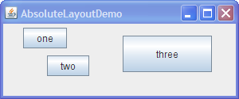

Lección: Disponer Componentes Dentro de un Contenedor
Haciendo Sin un Gestor de Diseño (Posicionamiento Absoluto)
Aunque es posible prescindir de un gestor de diseño, debe usar un gestor de diseño siempre que sea posible. Un gestor de diseño hace más fácil ajustar las apariencias de los componentes dependientes de la Apariencia, a diferentes tamaños de fuente, a los cambios de tamaño del contenedor, y a diferentes configuraciones regionales. Los gestores de diseño también pueden ser reutilizados fácilmente por otros contenedores, como también otros programas.
Nota: Esta lección cubre la escritura de código de diseño a mano, lo cual puede ser desafiante. Si no está interesado en aprender todos los detalles de la gestión del diseño, preferirá usar el gestor de diseño
GroupLayout combinado con una herramienta de construcción para diseñar su IGU.
Una de tales herramientas de construcción es el
EID NetBeans. De otra manera, si quiere
codificar a mano y no quiere usar GroupLayout, entonces se recomienda GridBagLayout
como el gestor de diseño más flexible y potente.
Si está interesado en usar JavaFX para crear su IGU, vea Trabajar Con Diseños en JavaFX.
Si un contenedor mantiene componentes cuyos tamaños no se ven afectados por el tamaño del contenedor o por la fuente, la Apariencia, o los cambios de lenguaje, entonces el posicionamiento absoluto podría tener sentido. Los paneles de escritorio, que contienen marcos internos, están en esta categoría. El tamaño y posición de los marcos internos no dependen directamente del tamaño del panel de escritorio. El programador determina el tamaño inicial y la colocación de los marcos internos dentro de un panel de escritorio, y después el usuario puede mover o redimensionar los marcos. Un gestor de diseño no es necesario en esta situación.
Otra situación en la cual el posicionamiento absoluto podría tener sentido es aquella en la que un contenedor personalizado que ejecuta cálculos de tamaño y posición que son particulares al contenedor, y quizás requieren del conocimiento del estado especializado del contenedor. Esta es la situación de los paneles de división.
Crear un contenedor sin un gestor de diseño implica los siguientes pasos.
-
Establecer el gestor de diseño del contenedor a nulo llamando al método
setLayout(null). -
Llamar al método
setboundsdel la claseComponentpara cada uno de los hijos del contenedor. -
Llamar al método
repaintde la claseComponent.
Sin embargo, crear contenedores con contenedores posicionados absolutamente pueden causar problemas si la ventana que contiene el contenedor es redimensionada.
Aquí tiene una captura de un marco cuyo panel de contenido usa posicionamiento absoluto.

Pulse el botón Lanzar para ejecutar AbsoluteLayoutDemo usando Java™ Web Start (descargue KDJ 7 o posterior). Alternativamente, para compilar y ejecutar el ejemplo usted mismo, consulte el índice de ejemplos.
Su código está en
AbsoluteLayoutDemo.java. El esbozo de código siguiente muestra cómo los componentes en el
panel de contenido son creados y dispuestos.
pane.setLayout(null);
JButton b1 = new JButton("one");
JButton b2 = new JButton("two");
JButton b3 = new JButton("three");
pane.add(b1);
pane.add(b2);
pane.add(b3);
Insets insets = pane.getInsets();
Dimension size = b1.getPreferredSize();
b1.setBounds(25 + insets.left, 5 + insets.top,
size.width, size.height);
size = b2.getPreferredSize();
b2.setBounds(55 + insets.left, 40 + insets.top,
size.width, size.height);
size = b3.getPreferredSize();
b3.setBounds(150 + insets.left, 15 + insets.top,
size.width + 50, size.height + 20);
...//En el metodo main:
Insets insets = frame.getInsets();
frame.setSize(300 + insets.left + insets.right,
125 + insets.top + insets.bottom);